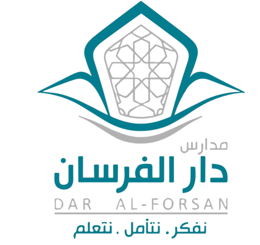

بوابة ربط الشواهد بالسجلات
قسم الدبلوما الأمريكية (بنين) — مدارس دار الفرسان · العام الدراسي 2026-2027
4مجالات
11معياراً
52مؤشراً
140سجلاً
اختر دورك في المشروع
اختر دورك لتفتح لك صفحاته.
منصة داخلية غير تابعة لهيئة تقويم التعليم والتدريب.

قسم الدبلوما الأمريكية (بنين) — مدارس دار الفرسان · العام الدراسي 2026-2027
اختر دورك لتفتح لك صفحاته.